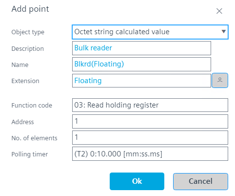

优化网络流量
您可以通过为 Modbus 设备创建批量读取器对象来优化 Modbus 网络的网络流量。批量读取器对象是Octet string calculated value一次性读取连续寻址寄存器的对象。批量读取器对象减少了网络上的请求数量，从而减少了网络负载。
Create bulk reader objects automatically
- Go to Building > Building structure.
- Right-click a device and select Go to engineering.
- Open the Modbus task.
- Right-click a device in your Modbus network and select Optimize network traffic.
- The bulk reader objects are created automatically.
Create bulk reader objects manually
- Go to Settings.
- Open the Device defaults task.
- Select the Modbus tab.
Device defaults - Enable Show all object types check box.
- Go to Building > Building structure.
- Right-click a device and select Go to engineering.
- Open the Modbus task.
- Right-click a device in your Modbus network and select Add data point.
- In the Object type field, select Octet string calculated value.
- In the Function code field, select Read holding register.
- In the Address field, enter the start address from which you want to read the network requests.

Function code and data type definition - Click OK.
- The bulk reader object is created.
Check bulk reader assignment

Modbus 数据点的限制计数中不考虑批量读取器对象。它计入 BACnet 对象的总限制。
- You have created at least one bulk reader object.
- Right-click a bulk reader object and select Show objects from bulk read.
- Applies the Assign bulk filter for the selected bulk reader object.
- Shows all objects for which the bulk reader was created.